.png)
Big Rock Pool Challenge Biodiversity Report - Q3 2026
This report explores data collected through the Big Rock Pool Challenge between the 1st of July 2026 and the 30 September 2026. During this time, we had regular monthly events taking place across nine hubs around the UK coastline, along with several pilot events, and our annual Community BioBlitz Festival.
All verified data collected by the Rock Pool Project using iNaturalist has now been published as part of a marine subset collated and archived by the UK Archive for Marine Species and Habitats Data (DASSH). This new marine subset is in a format that now allows us to share the data with UK, European and global data aggregators such as MEDIN, EurOBIS and OBIS, making the data available to researchers and scientists globally and maximizing the data’s impact on conservation, research and policy.
The iNaturalist marine subset will also flow into the Digital Twin Ocean (DTO) BioFlow project, funded by the European Union as a Horizon Europe project. The Digital Twin Ocean will be launched in February and will provide a virtual representation of the ocean by integrating ocean observation data, models and digital infrastructure. DTO-BioFlow will provide us with the tools to simulate a variety of ‘what if’ scenarios, supporting effective conservation, management and policy development.
All project data
Data presented in this section reflect all Big Rock Pool Challenge records from the start of the project in October 2024 through 30 September 2026.
Overall Project Summary
Species are grouped into higher-level “iconic taxa” categories based on their taxonomic ancestry. This grouping simplifies complex species-level data into broader biological categories (e.g. molluscs, crustaceans, algae), allowing clearer interpretation of community structure across sites and time periods.
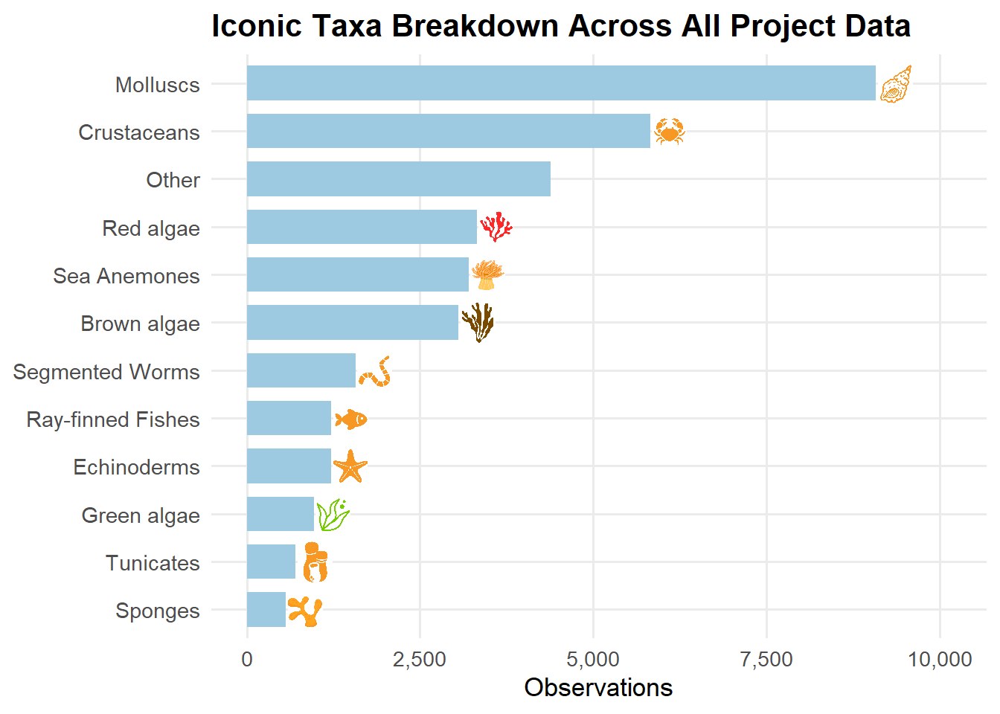
The Big Rock Pool Challenge is powered by people. Every observation and identification is a contribution to a shared understanding of coastal biodiversity.
Some participants frequently attend events and submit records, while others help out by identifying species through verification on iNaturalist- all contributions are equally valuable in building the dataset.
For all project data until end of September 2026, records were submitted by 929 recorders, and verified to research grade by 1905 identifiers.
The top recorders and identifiers are presented below- thank you for your efforts!
Overall Top Identifiers
Each hub represents a local coastal site where volunteers return to record marine life over time. These locations form the backbone of the Big Rock Pool Challenge network.
Because each hub has been running for different lengths of time, and is explored by different groups of people, the number of records varies, but every contribution adds valuable information about rock pool communities at that site.
Hubs are arranged in alphabetical order.
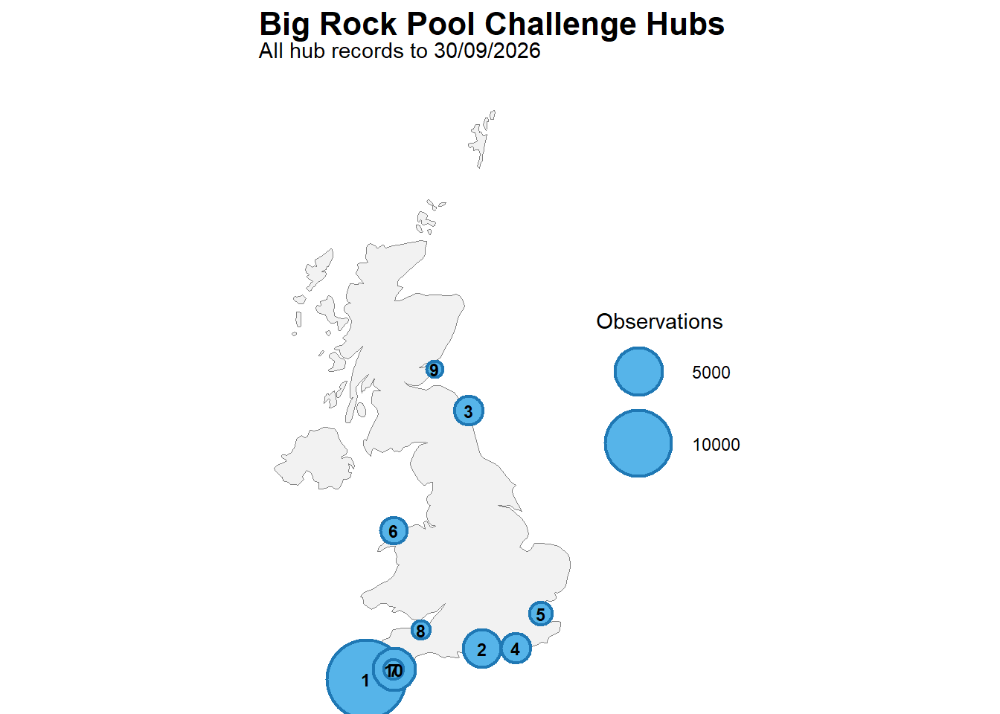
| Hub_ID | Hub | Observations | Contributors | Species |
|---|---|---|---|---|
| 3 | Beadnell Haven | 1750 | 28 | 298 |
| 1 | Castle Beach | 14279 | 340 | 896 |
| 9 | East Sands | 485 | 34 | 140 |
| 10 | Firestone Bay | 757 | 47 | 232 |
| 8 | Kilve Beach | 626 | 17 | 144 |
| 2 | Lee-on-the-Solent | 3032 | 81 | 338 |
| 6 | Menai Bridge | 1400 | 56 | 358 |
| 7 | Mount Batten | 3874 | 159 | 566 |
| 4 | Ovingdean | 1836 | 61 | 283 |
| 5 | Shoeburyness | 1011 | 38 | 214 |
| NA | No nearby hub* | 6048 | 195 | 1308 |
Records labelled No nearby hub may be from pilot events or annual events such as the National BioBlitz or Community BioBlitz Festival. They are not assigned to a recognised hub unless they fall within 5 km of that hub.
During BioBlitz Battle games, all species recorded earn a score. These scores reflect how often this species is recorded in the overall Big Rock Pool Challenge dataset. The higher scoring species are those that are recorded less often within the project and may represent more unusual or less commonly observed species.
In this report, scores are given between 1-100, according to our current scoring system 2.1
The highest scoring species recorded during the Big Rock Pool Challenge to 30/09/2026 are presented below.
Highest Scoring Species Across All Project Data
Observed by
pixnaturalist
Hub
Mount Batten
Quarter 3 2026 Data
This section presents observations recorded from 1 July to 30 September 2026, with records separated by hub, or by event where applicable. To view the Q3 data summary of a particular hub, please click the links below.Q3 2026 Summary
Quarter 3 2026 Summary
Community BioBlitz Festival
On 29-30th August 2026, we held our 2nd annual Community BioBlitz Festival at the Porthpean Outdoor Centre, St Austell, in Cornwall.
The festival was a 24 hour wildlife recording event, including family fun activities, nature surveys, expert talks and stalls held by partner organisations. We are grateful to everyone involved, and you can see the full event details and results here.
Community BioBlitz Festival

Pilot Events in Q3 2026
The table below lists records collected during pilot events in Q3 of 2026. During this time, we had four pilot events at three locations. We thank everyone who took part, and if you would like to run your own pilot event, or find out more, then you can do so here.
| Date | Location | Records |
|---|---|---|
| 11 July 2026 | Muckle Uri Geo, Fair Isle | 9 |
| 04 August 2026 | Crooklets Beach | 172 |
| 18 August 2026 | Crooklets Beach | 86 |
| 05 September 2026 | Muckle Uri Geo | 62 |
Iconic Taxa in Q3 2026
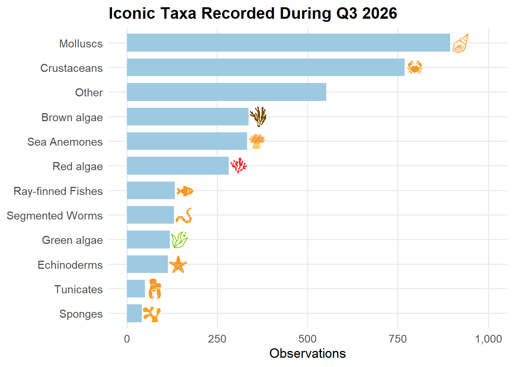
Top Recorders in Q3
Q3 Top Recorders

Top Identifiers in Q3
Q3 Top Identifiers
Hub Summaries Q3
New feature: Introduced species
This quarter, we introduce a new feature highlighting non-native species recorded through the Big Rock Pool Challenge. iNaturalist uses taxonomic information and community-curated assessments to flag taxa considered introduced outside their native range.
We share all non-native species data collected through the project each month with interested organisations, including Natural England, NatureScot and Natural Resources Wales, to support monitoring and understanding of species distributions.
132 non-native species records were recorded in Big Rock Pool Challenge data in Q3 of 2026.

Beadnell Haven
The Site

Iconic Taxa Composition
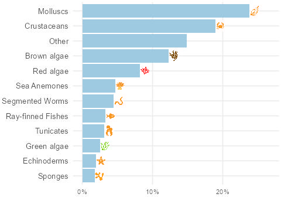
Top iconic groups: Molluscs, Crustaceans, Brown algae
Top Recorders
Top Identifiers

Top Scoring Species

Licence: cc-by-nc

Licence: cc-by-nc
Licence: Not displayed
Non-native species records in Q3 2026
| Image | Common name | Scientific name | Records | Image credit |
|---|---|---|---|---|
 | Chain Tunicate | Botrylloides violaceus | 1 | (c) Pauline Walsh Jacobson, some rights reserved (CC BY-NC) · cc-by-nc |
| No image | Carpet Sea Squirt | Didemnum vexillum | 1 | No image credit available |

Castle Beach
The Site

Iconic Taxa Composition
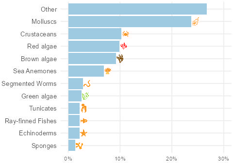
Top iconic groups: Molluscs, Crustaceans, Brown algae
Top Recorders
Top Identifiers

Top Scoring Species

Licence: cc-by-nc
Licence: Not displayed

Licence: cc-by-sa
Non-native species records in Q3 2026
| Image | Common name | Scientific name | Records | Image credit |
|---|---|---|---|---|
 | Japanese Wireweed | Sargassum muticum | 21 | (c) J. Maughn, some rights reserved (CC BY-NC) · cc-by-nc |
 | Pacific Oyster | Magallana gigas | 2 | no rights reserved, uploaded by Al Kordesch · cc0 |
| Chain Tunicate | Botrylloides violaceus | 1 | (c) Pauline Walsh Jacobson, some rights reserved (CC BY-NC) · cc-by-nc |

East Sands
The Site

Iconic Taxa Composition
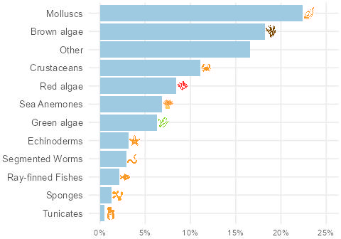
Top iconic groups: Crustaceans, Molluscs, Brown algae
Top Recorders
Top Identifiers

Top Scoring Species

Licence: cc-by-nc

Licence: cc-by-nc
Licence: Not displayed
Non-native species records in Q3 2026
No introduced-species observations were recorded for this hub in Q3 2026.
Firestone Bay
The Site

Iconic Taxa Composition
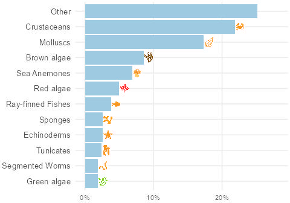
Top iconic groups: Crustaceans, Other, Molluscs
Top Recorders
Top Identifiers
Top Scoring Species

Licence: cc-by-nc-sa

Licence: cc-by

Licence: cc-by-nc
Non-native species records in Q3 2026
| Image | Common name | Scientific name | Records | Image credit |
|---|---|---|---|---|
 | Wakame | Undaria pinnatifida | 2 | (c) janebowman, some rights reserved (CC BY-NC) · cc-by-nc |

Kilve Beach
The Site
.jpg)
Iconic Taxa Composition
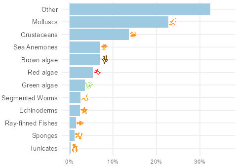
Top iconic groups: Molluscs, Sea Anemones, Crustaceans
Top Recorders
Top Identifiers
Top Scoring Species

Licence: cc-by-nc

Licence: cc-by-nc

Licence: cc-by-nc
Non-native species records in Q3 2026
| Image | Common name | Scientific name | Records | Image credit |
|---|---|---|---|---|
| Pacific Oyster | Magallana gigas | 15 | no rights reserved, uploaded by Al Kordesch · cc0 |
 | Beaked Barnacle | Austrominius modestus | 5 | (c) Pierre Corbrion, some rights reserved (CC BY-NC-SA), uploaded by Pierre Corbrion · cc-by-nc-sa |

Lee-on-the-Solent
The Site

Iconic Taxa Composition
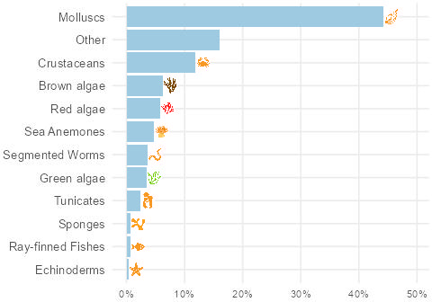
Top iconic groups: Molluscs, Crustaceans, Other
Top Recorders
Top Identifiers

Top Scoring Species

Licence: cc-by-nc

Licence: cc-by-nc

Licence: cc-by
Non-native species records in Q3 2026
| Image | Common name | Scientific name | Records | Image credit |
|---|---|---|---|---|
| Pacific Oyster | Magallana gigas | 10 | no rights reserved, uploaded by Al Kordesch · cc0 |
| No image | Common Atlantic Slippersnail | Crepidula fornicata | 6 | No image credit available |
 | Japanese Littleneck | Ruditapes philippinarum | 3 | (c) Max Willems, some rights reserved (CC BY-NC), uploaded by Max Willems · cc-by-nc |
| Beaked Barnacle | Austrominius modestus | 3 | (c) Pierre Corbrion, some rights reserved (CC BY-NC-SA), uploaded by Pierre Corbrion · cc-by-nc-sa |
 | Northern Quahog | Mercenaria mercenaria | 2 | (c) 2011 Marlo F. Krisberg, some rights reserved (CC BY-NC) · cc-by-nc |
| No image | sycamore maple | Acer pseudoplatanus | 1 | No image credit available |
 | black pine | Pinus nigra | 1 | (c) Dijana Dubrović, some rights reserved (CC BY-NC), uploaded by Dijana Dubrović · cc-by-nc |

Menai Bridge
The Site

Iconic Taxa Composition
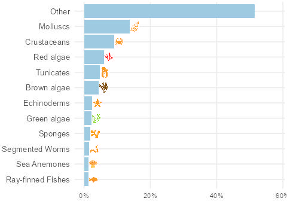
Top iconic groups: Molluscs, Crustaceans, Brown algae
Top Recorders
Top Identifiers

Top Scoring Species
Licence: Not displayed

Licence: cc-by-nc

Licence: cc-by-nc
Non-native species records in Q3 2026
| Image | Common name | Scientific name | Records | Image credit |
|---|---|---|---|---|
| Beaked Barnacle | Austrominius modestus | 2 | (c) Pierre Corbrion, some rights reserved (CC BY-NC-SA), uploaded by Pierre Corbrion · cc-by-nc-sa |
| Pacific Oyster | Magallana gigas | 1 | no rights reserved, uploaded by Al Kordesch · cc0 |

Ovingdean
The Site

Iconic Taxa Composition
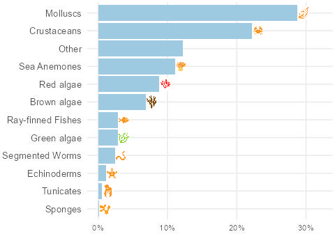
Top iconic groups: Molluscs, Crustaceans, Sea Anemones
Top Recorders
Top Identifiers

Top Scoring Species

Licence: cc-by-nc

Licence: cc-by

Licence: cc-by-nc-sa
Non-native species records in Q3 2026
| Image | Common name | Scientific name | Records | Image credit |
|---|---|---|---|---|
| Japanese Wireweed | Sargassum muticum | 4 | (c) J. Maughn, some rights reserved (CC BY-NC) · cc-by-nc |
| No image | Common Atlantic Slippersnail | Crepidula fornicata | 2 | No image credit available |
| Pacific Oyster | Magallana gigas | 1 | no rights reserved, uploaded by Al Kordesch · cc0 |

Shoeburyness
The Site

Iconic Taxa Composition
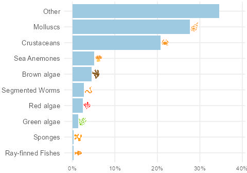
Top iconic groups: Molluscs, Other, Crustaceans
Top Recorders
Top Identifiers

Top Scoring Species

Licence: cc-by-nc

Licence: cc-by-nc

Licence: cc-by-nc
Non-native species records in Q3 2026
| Image | Common name | Scientific name | Records | Image credit |
|---|---|---|---|---|
| Pacific Oyster | Magallana gigas | 8 | no rights reserved, uploaded by Al Kordesch · cc0 |
| No image | Brush-clawed Shore Crab | Hemigrapsus takanoi | 4 | No image credit available |
| No image | Common Atlantic Slippersnail | Crepidula fornicata | 1 | No image credit available |
| Japanese Littleneck | Ruditapes philippinarum | 1 | (c) Max Willems, some rights reserved (CC BY-NC), uploaded by Max Willems · cc-by-nc |
| Beaked Barnacle | Austrominius modestus | 1 | (c) Pierre Corbrion, some rights reserved (CC BY-NC-SA), uploaded by Pierre Corbrion · cc-by-nc-sa |